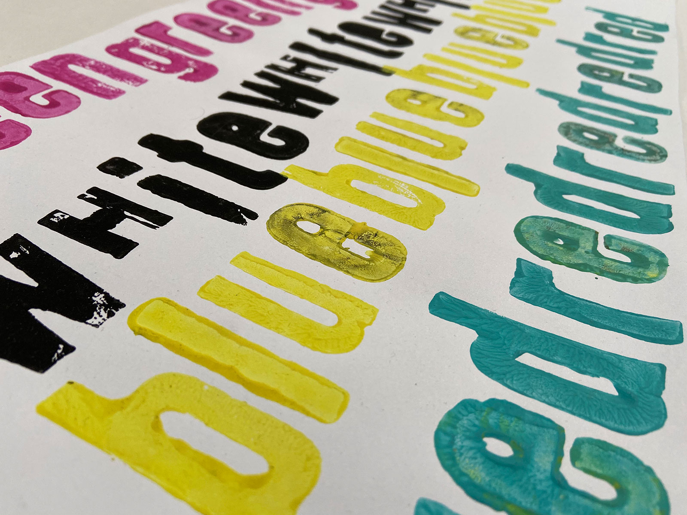
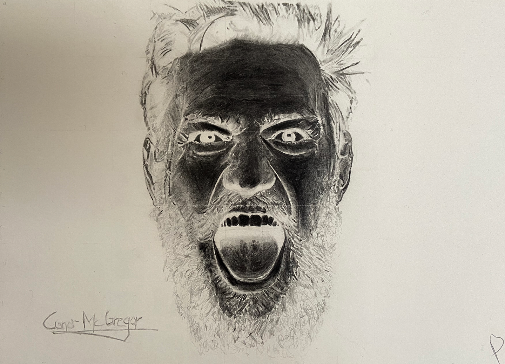
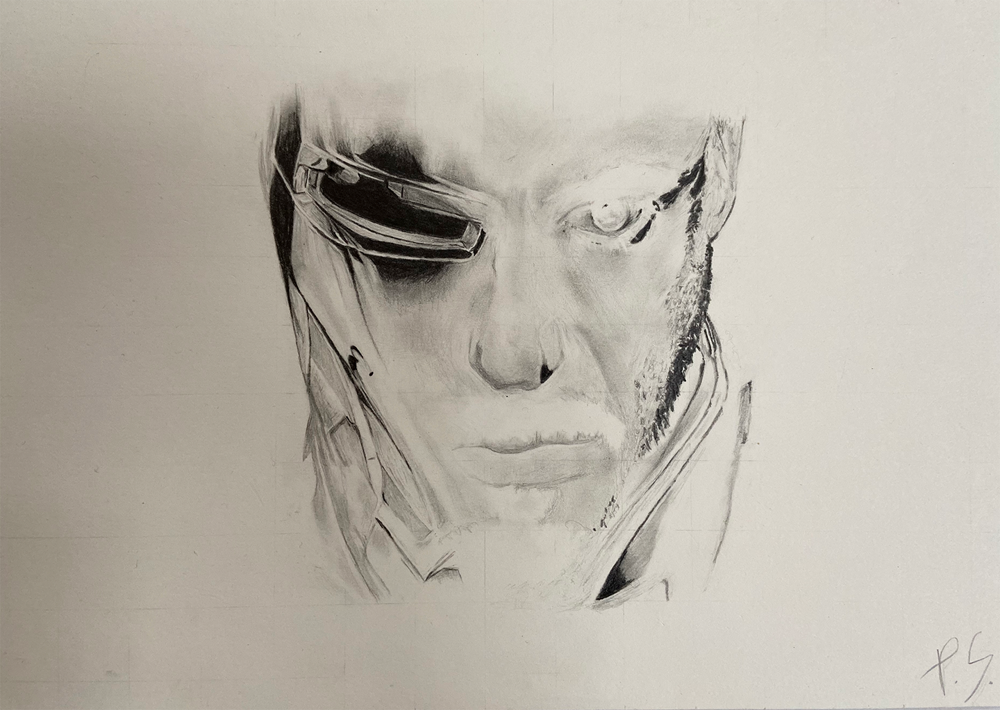
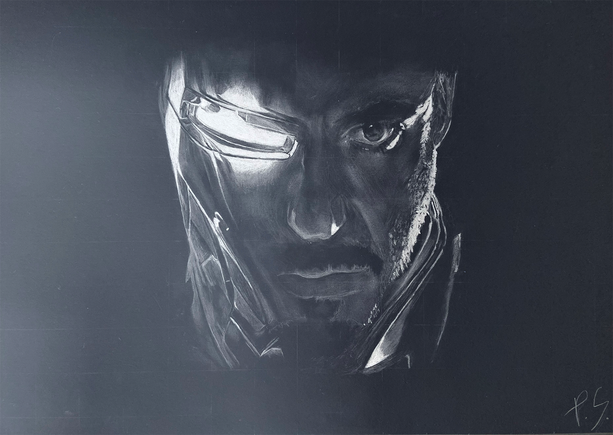

Interactive Drawings
Before I found my way into digital Design I did a lot of drawing. Furthermore I was always interested in the relationship between observer and Design. People around me started using their smartphones a lot and I wanted to combine the smartphone usage with an art purpose. So I created color inverted drawings which can only be seen correctly through for example a color inverted iPhone camera.
It was interesting to watch the reactions of people using everyday items to solve those „riddles“ and reveal pictures for them.
(Hover your mouse over the pictures to invert their colors.)




